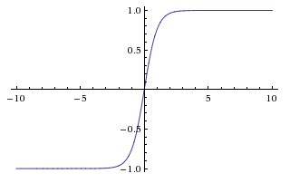
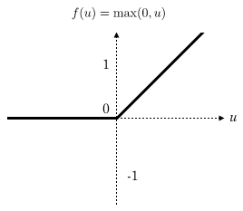
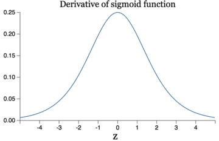

The Activation Function in Deep Learning
作用
激活函数不是真的要去激活什么。在神经网络中，激活函数的作用是能够给神经网络加入一些非线性因素，使得神经网络可以更好地解决较为复杂的问题。在神经网络中，我们需要引入一些非线性的因素，来更好地解决复杂的问题。而激活函数恰好就是那个能够帮助我们引入非线性因素的存在。
定义及其相关概念
在ICML2016的一篇论文Noisy Activation Functions中，作者将激活函数定义为一个几乎处处可微的$ h : R → R $。

在实际应用中，我们还会涉及到以下的一些概念：
a.饱和
当一个激活函数$h(x)$满足
$lim_{n\to+\infty}h′(x)=0$
$lim_{n\to+\infty}h′(x)=0$
时我们称之为右饱和。
当一个激活函数$h(x)$满足
$lim_{n\to-\infty}h′(x)=0$
$lim_{n\to-\infty}h′(x)=0$
时我们称之为左饱和。当一个激活函数，既满足左饱和又满足又饱和时，我们称之为饱和。
b.硬饱和与软饱和
对任意的$x$，如果存在常数$cc$，当$x>c$时恒有$h′(x)=0$则称其为右硬饱和，当$x<c$时恒 有$h′(x)=0$则称其为左硬饱和。若既满足左硬饱和，又满足右硬饱和，则称这种激活函数为硬饱和。但如果只有在极限状态下偏导数等于0的函数，称之为软饱和。
常用线性激活
sigmoid函数
Sigmoid函数曾被广泛地应用，但由于其自身的一些缺陷，现在很少被使用了。 定义：
图示：

导数
优点： 1.Sigmoid函数的输出映射在(0,1)之间，单调连续，输出范围有限，优化稳定，可以用作输出层。 2.求导容易。
缺点： 1.由于其软饱和性，容易产生梯度消失，导致训练出现问题。 2.其输出并不是以0为中心的。
tanh函数
现在，比起Sigmoid函数我们通常更倾向于tanh函数。tanh函数被定义为 导数： 函数位于[-1, 1]区间上，对应的图像是:  优点： 1.比Sigmoid函数收敛速度更快。 2.相比Sigmoid函数，其输出以0为中心。 缺点： 还是没有改变Sigmoid函数的最大问题——由于饱和性产生的梯度消失。
Relu(Rectified Linear Units)函数
最近几年卷积神经网络中，激活函数往往不选择sigmoid或tanh函数，而是选择relu函数。Relu函数的定义是： Relu函数图像如下图所示：

Relu函数作为激活函数，有下面几大优势：
-
速度快 和sigmoid函数需要计算指数和倒数相比，relu函数其实就是一个$max(0,x)$，计算代价小很多。
-
减轻梯度消失问题 回忆一下计算梯度的公式$\nabla=\sigma’\delta x$。其中，$\sigma’$是sigmoid函数的导数。在使用反向传播算法进行梯度计算时，每经过一层sigmoid神经元，梯度就要乘上一个$\sigma’$。从下图可以看出，$\sigma’$函数最大值是1/4。因此，乘一个$\sigma’$会导致梯度越来越小，这对于深层网络的训练是个很大的问题。而relu函数的导数是1，不会导致梯度变小。当然，激活函数仅仅是导致梯度减小的一个因素，但无论如何在这方面relu的表现强于sigmoid。使用relu激活函数可以让你训练更深的网络。

-
稀疏性 通过对大脑的研究发现，大脑在工作的时候只有大约5%的神经元是激活的，而采用sigmoid激活函数的人工神经网络，其激活率大约是50%。有论文声称人工神经网络在15%-30%的激活率时是比较理想的。因为relu函数在输入小于0时是完全不激活的，因此可以获得一个更低的激活率。
-
在没有无监督预训练的时候也能有较好的表现
缺点： 随着训练的进行，可能会出现神经元死亡，权重无法更新的情况。如果发生这种情况，那么流经神经元的梯度从这一点开始将永远是0。也就是说，ReLU神经元在训练中不可逆地死亡了。